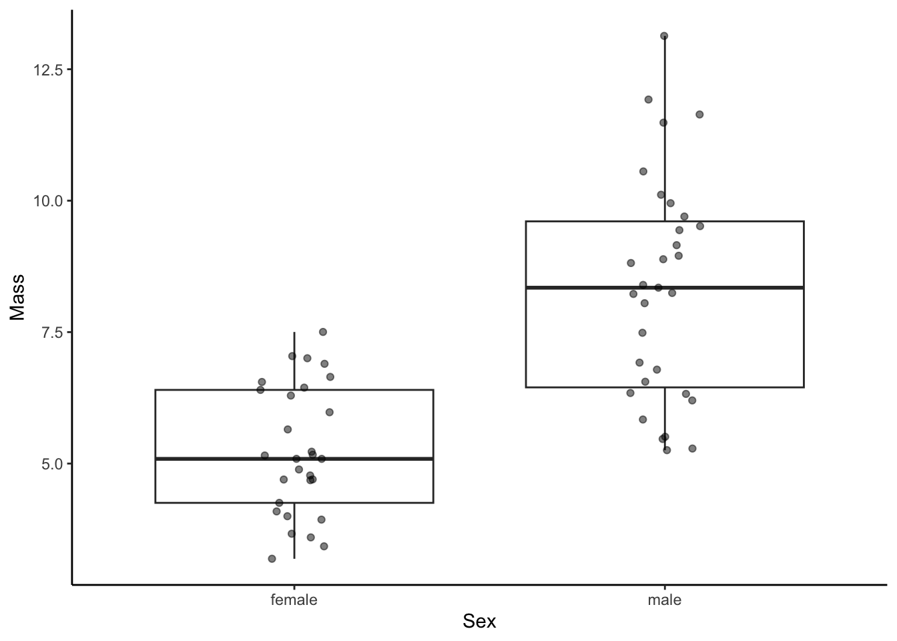

A Graph Library
This appendix provides an overview of graphs used in R exercises. This is not meant to be a comprehensive tutorial but rather a quick reference guide.
A.1 Sample Data
To illustrate the different graphing commands in ggplot2, we will use a simple data set with four variables: two discrete variables (sex and population) and two continuous variables (length and mass).
## id sex population length mass
## 1 1 female lake 90 3.997350
## 2 2 female lake 85 3.424650
## 3 3 female lake 90 4.252500
## 4 4 female lake 94 4.683080
## 5 5 female lake 111 6.443883
## 6 6 female lake 105 5.154187A.3 One Variable: Continuous
Plots with a single continuous variable are typically used to visualize the distribution of a variable with a frequency histogram or a density function.
A.3.1 Frequency Histogram
A frequency histogram (geom_histogram()) uses bars to depict the frequency (on y) of certain variable ranges (on x).
ggplot(dat, aes(length)) +
geom_histogram() +
xlab("Length") +
ylab("Frequency (count)") +
theme_classic()
A.3.2 Density Plot
A density plot (geom_density()) is related to a frequency histogram in that they can both be used to visualize the distribution of a single variable. While the histogram shows the raw counts (or relative frequencies) in different ranges of a variable, the density plot is a statistical representation of that same distribution. It is essentially a smoothed version of the histogram.
A.3.3 Frequency Histogram with Density
Frequency histograms and density plots can be combined in a single plot to show the raw data and the smoothed distribution simultaneously.
A.4 Two Variables: Continuous X and Y
Plots with with two continuous variables are used to depict the relationship between a response variable (dependent variable, on y) and an explanatory variable (independent variable, on x).
A.4.1 Scatter Plot
A scatter plot (geom_point()) graphs the values of two variables along two axes, with points representing individual data points.
A.4.2 Regression Line
Whenever we have two continuous variables, we can draw regression lines that best fit the the data using geom_smooth(). To draw a linear regression line, we need to specify the use of a linear model (lm) as geom_smooth(method="lm").
ggplot(dat, aes(x=length, y=mass)) +
geom_smooth(method="lm") +
xlab("Length") +
ylab("Mass")+
theme_classic()
A.4.3 Scatter Plot with Regression
Scatter plots and regression lines can be combined in a single plot to show the raw data and the smoothed relationship simultaneously.
A.4.4 Adding Discrete Variables
To contrast relationship between two variables across different groups, we can change the color and shape of markers, which are designated with color and shape within aes(). Note that this will also generate separate regression lines for each subgroup.
ggplot(dat, aes(x=length, y=mass, color=sex, shape=population)) +
geom_point() +
geom_smooth(method="lm") +
xlab("Length") +
ylab("Mass")+
theme_classic()If you want to draw a combined regression line across all subgroups, you can simply define the subgroups within geom_point only by adding separate aesthetics there.
A.5 Two Variables: Discrete X, Continuous Y
Plots with with a discrete and a continuous variable are used to contrast a response variable (dependent variable, on y) across discrete groups (independent variable, on x). There are multiple ways to do this elegantly, and the use of the different geoms is largely a matter of preference.
A.5.1 Box Plot
Box plots (geom_boxplot()) display the distribution of data based on five numbers: the median (the thick horizontal line), the first and third quartile that include 50 % of the data points (delineated by the box), and the minimum and maximum (delineated by the vertical “whiskers”).

A.5.2 Dot Plot
Dot plots (geom_dotplot()) are histogram-like plots that bin values along the y-axis to show the distribution of data.
A.5.3 Violin Plot
Violin plots (geom_violin()) are similar to box plots, but they also display the density along each groups y-axis distribution.
ggplot(dat, aes(x=sex, y=mass)) +
geom_violin(binaxis='y',stackdir='center') +
xlab("Sex") +
ylab("Mass")+
theme_classic()
A.5.4 Adding Raw data
The box, dot, and violin plots provide intuitive summaries of data. But you may want to plot these summaries along with the actual raw data, which can be done with geom_jitter(). Here is is show with a box plot, but it works the same with a violin plot, too.
ggplot(dat, aes(x=sex, y=mass)) +
geom_boxplot() +
geom_jitter(alpha=.5, width = .1) + #alpha denotes the degree of transparency, width the degree of jitter
xlab("Sex") +
ylab("Mass")+
theme_classic()
A.6 Aggregate Data
A.6.1 Calculating Mean and Standard Deviation
In some exercises, you will not be plotting data from individuals but rather aggregate data that is compiled from many individuals and provides a mean and a measurement of variation around a mean for different sampling groups. To show you how we can visualize such data as mean (∓ variation), let’s first calculate the mean and standard deviation (sd) of length separate for each sex and population using the ddply function from the plyr package.
## sex population mean sd
## 1 female lake 94.86667 10.02046
## 2 female stream 108.07143 11.09029
## 3 male lake 116.26667 15.89909
## 4 male stream 120.87500 14.36141A.6.2 Visualizing Means and Variation
Means can simply be visualized using geom_point() with the response variable on the y-axis and an explanatory variable on the x-axis. In this case, I also designated a second explanatory variable by color. To add error bars, you can use geom_errorbar() and specify the error in either direction with ymin and ymax simply by subtracting or adding the measure of variation from the mean within aes(). Note that position=position_dodge(.9) prevents overlap of different subgroups.
A.7 Combining Multiple plots
In some instances, you may want to combine multiple plots into a single output. To do so, you first need to store individuals plots as objects (p1 and p2 below), and then you can combine them using the grid.arrange() function from the gridExtra package. ncol refers to the number of columns in the plotting grid.
p1 <- ggplot(dat, aes(length, color=sex, fill=sex)) + #color is for the edges (lines), fill is for the areas
geom_histogram(aes(y=..density..), alpha=.5) + #alpha designates the transparancy
geom_density(alpha=.2) +
xlab("Length") +
ylab("Frequency (count)")+
theme_classic()
p2 <- ggplot(dat, aes(mass, color=sex, fill=sex)) + #color is for the edges (lines), fill is for the areas
geom_histogram(aes(y=..density..), alpha=.5) + #alpha designates the transparancy
geom_density(alpha=.2) +
xlab("Length") +
ylab("Frequency (count)")+
theme_classic()
grid.arrange(p1,p2, ncol=2)
Alternatively, we can plot the graphs on top of each other.
A.8 Working with Color Palettes
A.8.1 Color Palettes in RColorBrewer
You may want to change the color scheme of your plots because you dislike the default scheme, or because the default scheme is not particularly accessible for people with impaired color vision. One easy way to change the default scheme is to use color palettes provided by the RColorBrewer package, which you need to install first if you want to use it.
To see the different color palette options, you can use the display.brewer.all() function. Note that there are three sets of palettes:
Sequential palettes are best used for ordered data that progress from low to high, with light colors for low and dark colors for high data values.
Qualitative palettes are used to create the visual differences nominal or categorical data (e.g., males and females, different populations, or different experimental treatments).
Diverging palettes put equal emphasis on mid-range critical values (e.g., the mean of a distribution, or zero for metrics that have both negative and positive values) and extremes at both ends of the data range.
You can also specify to see only colorblind-friendly options:
A.8.2 Combining RColorBrewer Palettes with ggplot
Custom RColorBrewer palettes can be added to regular ggplot() graphs with scale_color_brewer() (for points and lines) and scale_fill_brewer() (for the fill of shapes).
p1 <- ggplot(dat, aes(length, color=sex, fill=sex)) +
geom_histogram(aes(y=..density..), alpha=.5) +
geom_density(alpha=.2) +
xlab("Length") +
ylab("Frequency (count)") +
theme_classic() +
scale_color_brewer(palette="Set3") + #changes color to RColoBrewer palette "Set3"
scale_fill_brewer(palette="Set3") #changes fill to RColoBrewer palette "Set3"
p2 <- ggplot(dat, aes(mass, color=sex, fill=sex)) +
geom_histogram(aes(y=..density..), alpha=.5) +
geom_density(alpha=.2) +
xlab("Length") +
ylab("Frequency (count)") +
theme_classic() +
scale_color_brewer(palette="Paired") + #changes color to RColoBrewer palette "Paired"
scale_fill_brewer(palette="Paired") #changes fill to RColoBrewer palette "Paired"
grid.arrange(p1,p2, ncol=2)## `stat_bin()` using `bins = 30`. Pick better value with `binwidth`.
## `stat_bin()` using `bins = 30`. Pick better value with `binwidth`.